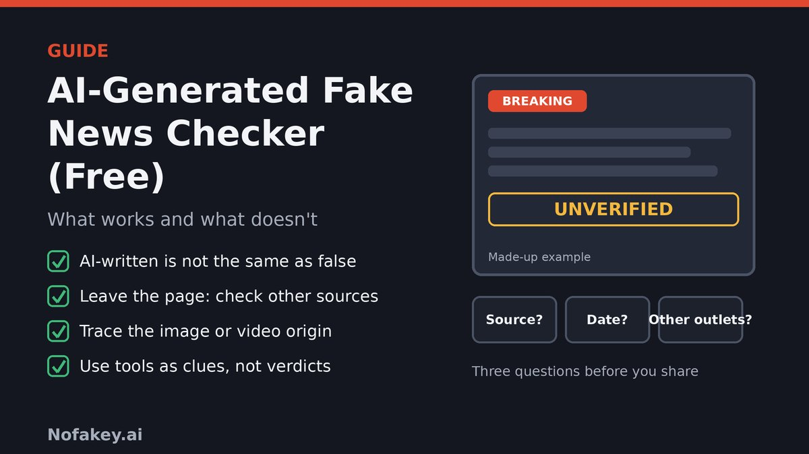

A shocking headline lands in your feed. The photo looks real, the wording is polished, and a dozen accounts are sharing it. You wonder whether it was cooked up by AI, so you search for a free AI-generated fake news checker. Here is the catch: the tools you will find answer a narrower question than the one you really have. This guide explains what free checkers can and cannot do, and gives you a method that works even when the tools disagree.
"Fake news checker" can mean three different jobs
Search results for this topic are mostly directories of tools with names like AI detector, fake news detector and credibility checker, often listed side by side as if they do the same thing. They do not. A good first step is to work out which job you actually need done.
| The job | The question it answers | What it cannot tell you |
|---|---|---|
| AI text detection | Does this writing resemble machine-written text? | Whether the claims are true, or who wrote it. Its results can be wrong, and our guide on free AI content detectors explains why. |
| Image, video and audio checks | Was this media generated or altered by AI? | Whether the event it shows really happened, or whether a real photo is being used in a false context |
| Fact-checking | Is this specific claim accurate? | Nothing automatic: it needs reliable sources, context and human judgment, and some claims are too new to have been checked |
Two mix-ups cause most mistakes. First, believing a story is false because it "sounds like AI". Second, believing a story is true because a detector said "human". Neither follows. Accuracy is about the claim, not the typing.
What free AI fake news checkers can and can't do
- They can give you a clue. A flag on suspicious text or media is a reason to look harder, not a verdict.
- They can be wrong in both directions. They can flag real work and miss generated material, and the European Digital Media Observatory advises using detection tools but not relying exclusively on them because they are known to make mistakes.
- "Credibility scores" are a judgment call. A 0 to 100 score from a tool is an estimate built on patterns. Ask what it is based on and whether you can see the reasoning.
- An AI chatbot is not a fact-checker. It can help you find leads and summarize, but it can state wrong things confidently. Confirm against original sources.
- They can't see context. A real, old photo shared as if it were new will pass an AI-image test and still mislead you.
- New claims have no track record. Breaking stories may not have been checked by anyone yet, which is when care matters most.
A six-step method that works without any tool
US government guidance on disinformation boils down to a few habits. The Cybersecurity and Infrastructure Security Agency (CISA) urges people to question the source, check the message, check the sources behind it and check the quality. Add a pause at the start and a check on media at the end, and you have a routine you can run in a couple of minutes.
- Pause. Strong emotion is a warning sign. Content built to make you angry, scared or delighted is built to be shared before it is checked.
- Check the source. Who published it? Is there a real author, an About page and a way to contact them? Look at the web address for unfamiliar or lookalike domains that imitate real news sites, and check the date.
- Check the message. What exactly is being claimed? Does it cite evidence, name sources and acknowledge other views, or does it rely on outrage and vague "experts say" lines?
- Leave the page and look for others. Search the claim in a new tab. See whether reliable outlets, official sources or fact-checking teams such as the AP or Reuters fact-check desks report the same thing. If you cannot find a credible source or any independent confirmation, treat the claim as unverified.
- Trace the media. Find where an image or video first appeared, not just where you saw it. Use a reverse image search, look for the original upload, and check date, location and who posted it first.
- Decide, then share responsibly. If you cannot confirm it, do not share it. If you share something unverified, say so clearly.
Which check fits what you have?
Spotting AI images, video, audio and text
- Images: look for odd hands, eyes, shadows, text in the background, and details that do not fit together. These clues are getting less reliable as tools improve, so also check the origin.
- Audio: listen for unusual intonation, breaths, unnatural pauses or word choices. Be extra careful with an urgent voice message asking for money or action. See our guide on the fake AI customer support chat scam for related tricks.
- Video: check lip-sync, blurry edges, unrealistic features and whether the audio matches the picture. A real video can have fake audio added.
- Text: generic phrasing, no named sources, no dates or specifics and repeated stock phrases can be clues, but plenty of human writing has them too. Check the claims, not the style.
- Provenance: media with verified timestamps, location data or clear source information is easier to trust than a file with no history.
Pre-share checklist
Tick anything that matches the story you are looking at. It is a rough guide, not a verdict, and it runs in your browser only.
Web address clues
Paste a link to see address-level clues. It reads the text only, never opens the link, and nothing leaves your browser. A clean-looking address does not prove a site is trustworthy.
What U.S. agencies say about AI and disinformation
The FBI and CISA have warned that foreign threat actors use generative AI to craft and spread misleading content. In a joint public service announcement about the 2024 elections, they urged people to stay vigilant, verify what they read through multiple reliable sources before sharing, and rely on state and local election officials for voting information. The same habits apply to any topic: favor primary and official sources, and be careful with anything that only exists in screenshots.
State agencies echo the basics. Indiana's Department of Homeland Security, for example, advises checking the source, seeing whether other credible sources report the same thing, checking the date and pausing before sharing emotionally charged content. It also notes that stories on websites mimicking real news outlets often end in unfamiliar domains.
Staying safe with free checker tools
- Reach tools yourself. Type the address, rather than tapping a link in an unexpected message or ad.
- Be careful with extensions and apps. Install only from official stores and read what data they can access.
- Check the privacy policy and avoid pasting private messages, personal details or confidential documents.
- Do not pay or log in to "unlock" a result for a free check.
- Watch out for scams that use "verification" as bait. See our guides on the fake AI identity reverification scam and the fake QR code verification scam.
If you already shared something false
- Correct it quickly. Delete the post or add a clear correction on top of it.
- Share the accurate information where you can, with the source.
- Tell the people who saw it, especially anyone who may have acted on it.
- Report it to the platform if it is a scam, impersonation or harmful content.
Conclusion
A free AI-generated fake news checker can be a handy nudge, but it answers the wrong question if you treat it as a truth machine. Work out which job you need done, keep tools in a supporting role, and rely on a simple routine: pause, check the source, check the message, look at what other reliable sources say, and trace any image or video to its origin. That routine works whether a story was written by a person, by AI or by both.
Got a message, link or headline you are unsure about? Paste it into our free checker for a quick first read. It is a first look, not proof, so follow up with the steps above.
Frequently asked questions
Is there a free AI-generated fake news checker that works?
Free tools exist, but they do different jobs: some guess whether text was machine-written, some analyze images or video, and some try to rate credibility. None can reliably settle whether a story is true on its own. Use them as clues alongside checking the source, finding other reliable reports and looking for fact-checks.
Can an AI detector tell me whether a news story is fake?
No. A detector looks at writing patterns, not facts. A true story can be written or edited with AI, and a false story can be written entirely by a person. Whether a claim is accurate has to be checked against reliable sources.
Can I use an AI chatbot to fact-check the news?
A chatbot can help you find leads, summarize an article or suggest search terms, but it can also give confident answers that are wrong. Treat its output as a starting point and confirm anything important with the original source, reliable news outlets or fact-checkers.
How do I check whether an image or video is AI-generated?
Do not rely on visual glitches alone, because they are getting harder to spot. Trace where the image or video first appeared, look for the original source, date and location, check whether fact-checkers or reliable outlets have covered it, and treat detector results as one clue that can be wrong.
What is the fastest way to check a viral headline?
Leave the page. Search for the key claim, check who published it and when, and see whether reliable outlets, official sources or fact-checkers are reporting the same thing. If you cannot find a credible source or any independent confirmation, do not share it.
Is it safe to paste an article into a free checker?
Public articles carry little privacy risk, but avoid pasting private messages, personal details or confidential documents. Check the tool's privacy policy, reach it by typing the address yourself, and do not install extensions or enter payment details to see a result.
What should I do if I already shared a fake story?
Delete the post or add a clear correction, share the accurate information if you have it, and tell people who may have seen it. Correcting quickly matters more than feeling embarrassed.
This guide is general information. Tools, platforms and agency guidance change, so check official sources for the latest.
Got a headline or link you want checked?
Run it through the checker